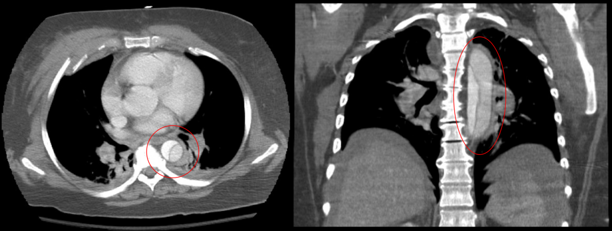

Ficha del catálogo
Disección aórtica
- Sistema
- Cardiovascular
- Modalidad
- TC
- Región
- Tórax y abdomen
- Dificultad
- Avanzado
Consiste en el desgarro de la íntima aórtica con entrada de sangre a la capa media, lo que crea una luz falsa separada de la verdadera por un colgajo intimal. Se presenta como dolor torácico brusco, desgarrante e irradiado a la espalda, y constituye una urgencia vascular. Los factores predisponentes incluyen hipertensión mal controlada, enfermedades del tejido conectivo y válvula aórtica bicúspide.
Técnica
La angiotomografía sincronizada con el electrocardiograma es el estudio de elección por su rapidez y cobertura completa desde el cuello hasta las arterias femorales. Se realiza primero una adquisición sin contraste para detectar hematoma intramural hiperdenso y luego una fase arterial. El ecocardiograma transesofágico es útil en el paciente inestable que no puede trasladarse.
Qué observar
- Colgajo intimal como línea hipodensa que separa dos luces
- Extensión proximal: Afectación o no de la aorta ascendente
- Extensión distal y compromiso de troncos supraaórticos, renales y mesentéricos
- Signos de complicación: Derrame pericárdico, hemotórax, insuficiencia aórtica
- Hematoma intramural hiperdenso en la serie simple
- Signos de malperfusión visceral o de miembros inferiores
Hallazgos
Se observa una línea intimal fina que divide la luz en verdadera y falsa, con realce diferente entre ambas. La luz verdadera suele ser menor, de contorno redondeado, con realce más precoz y continuidad con el segmento aórtico no disecado; la falsa es mayor, de bordes angulados y con flujo más lento. El signo del pico y las telarañas de la media residual ayudan a identificar la luz falsa.
Perlas
La distinción entre afectación de la aorta ascendente y disección limitada a la descendente cambia por completo el manejo: La primera es quirúrgica urgente y la segunda suele tratarse médicamente, por lo que el informe debe declarar explícitamente el punto proximal de extensión.
Diagnóstico diferencial
- Hematoma intramural
- Hay engrosamiento parietal semilunar hiperdenso en la serie simple, sin colgajo ni luz falsa realzada.
- Úlcera aterosclerótica penetrante
- Se aprecia una saculación focal de contraste que atraviesa la íntima calcificada, sin colgajo extenso.
- Artefacto de movimiento en aorta ascendente
- La línea aparente cruza los límites del vaso, cambia entre cortes y desaparece con sincronización cardiaca.
- Aneurisma con trombo mural
- El trombo es periférico y sin realce, y las calcificaciones permanecen en el contorno externo.
Simuladores
- Artefacto de pulsación cardiaca en la aorta ascendente
- Vena innominada o seno pericárdico adyacentes al vaso
- Estriación de contraste por mezcla incompleta en la fase arterial
Por modalidad
- TC
- Define el colgajo, la extensión, el origen de las ramas y las complicaciones en un solo estudio rápido.
- US
- El ecocardiograma valora la raíz aórtica, la insuficiencia valvular y el derrame pericárdico junto a la cama del paciente.
Protocolo
Serie simple torácica seguida de angiotomografía desde el cuello hasta las femorales con sincronización electrocardiográfica y cortes submilimétricos. El seguimiento de bolo se coloca en la aorta descendente y se emplea inyección de alto flujo. Se reconstruyen planos oblicuos sagitales y proyecciones de intensidad máxima.
Clasificación
La clasificación de Stanford divide en tipo A, con afectación de la aorta ascendente independientemente del origen, y tipo B, limitada a la aorta distal al origen de la subclavia izquierda. La clasificación de DeBakey distingue tipo I con origen ascendente y extensión distal, tipo II confinado a la ascendente y tipo III originado en la descendente.
Errores frecuentes
- Confundir artefacto de pulsación con colgajo intimal
- Omitir la serie sin contraste y pasar por alto un hematoma intramural
- No especificar si la aorta ascendente está comprometida

disección aorta colgajo intimal Stanford urgencia vascular angiotomografía hematoma intramural